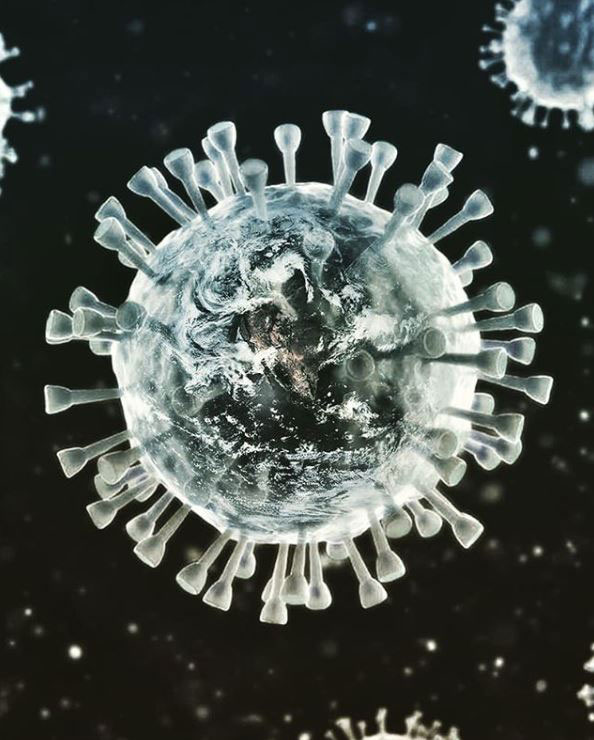

Covid-19

This image is shedding light into the current situation that the whole world is facing, which is Covid-19. The final piece was created digitally through Photoshop and some light touces afterwards in Lightroom to obtain the perfect lighting. This piece meant a lot to me because it focuses on a current event that I'm perosnally, and the whole world, is dealing with. The hardest part about this project was getting the tubes that are sticking out perfectly blended with the surface of the earth. That was a real pain, but after countless Youtube videos, I think it came out pretty well.
Home